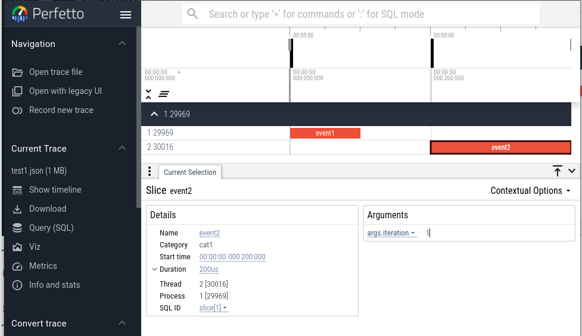
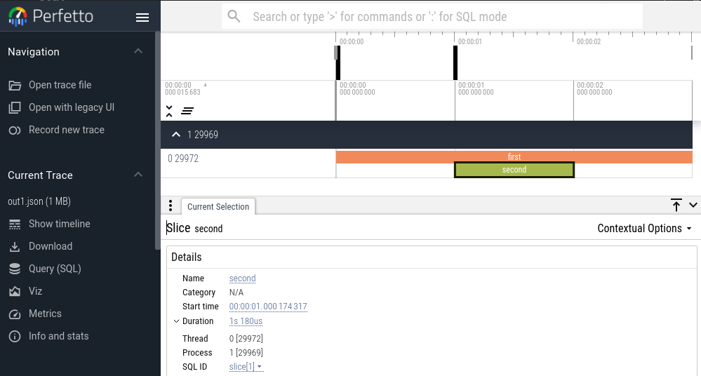

Introduction to Chrome Tracing
The Chrome trace viewer (and the improved Perfetto viewer) were written for Chrome and Android system profiling, but they make great general purpose timeline viewers for your own trace data.
This post is about the trace format and some minimal C++ code to generate the trace output in your own projects.
The viewer built-in to Chrome can be opened with "chrome:tracing" in the URL bar, or use the improved Perfetto viewer at ui.perfetto.dev
The Chrome Trace Format is documented here.
There are a number of event types, but to start with we need the duration events ('B' and 'E' pairs) and/or completed events ('X', which combine a duration event into a single event entry)
To start, we can experiment by writing a file by hand.
The pid (Process Id), tid (Thread Id), ph (Phase, basically the event type), and ts (timestep, in microseconds) fields are required.
The name field is technically not required, but you'll most likely want to use it.
The args field holds arbitrary extra information that can be display when the
event is selected.
Note that duration events have some ordering requirements - they must be ordered by time within a single thread. The complete events have no such requirement, and so are a little easier to work with.
The following file has two events (cleverly named "event1" and "event2"):
[ {"name":"event1","ph":"B","ts":"0", "pid":"1","tid":"1"}, {"name":"event1","ph":"E","ts":"100","pid":"1","tid":"1"}, {"name":"event2","ph":"B","ts":"200","pid":"1","tid":"2"}, {"name":"event2","ph":"E","ts":"400","pid":"1","tid":"2", "args":{"iteration":1 }} ]
Load that into Perfetto and we get this:

In the screenshot, "event2" is selected and the information in the args field
is shown in the lower right.
Here is the same file using complete events. The complete events add a 'dur' element which is the duration of the event. The unit of time is microsecond, but the times and durations can be floating point numbers for more precision.
[ {"name":"event1","ph":"X","ts":"0", "dur":"100","pid":1,"tid":1}, {"name":"event2","ph":"X","ts":"200","dur":"200","pid":1,"tid":2, "args":{"iteration": 1 } } ]
Simple Tracing in C++
One possible interface could use the following class.
class Timer { public: using TimePoint = std::chrono::steady_clock::time_point; void start(); void stop(); Timer(const std::string& name) : name_(name) {} private: TimePoint start_time_; std::string name_; };
The start time is stored for use in computing the elapsed time. This could be avoided by just outputting 'B' and 'E' events, but for this example we will output 'X' events.
The timer also keeps a name, which is used for the name of the event.
Also declare a function to write the trace at the end of the run.
// Write trace to file in JSON format void writeTrace(const std::string& fname);
Now, on to the implementation file. Create a structure to hold all the information for an event.
struct EventRecord { double timestamp; // in seconds char event_type; std::string name; std::thread::id tid; double duration; // in seconds EventRecord(double ts, char type, const std::string& name, std::thread::id tid1, double dur=0.0) : timestamp(ts), event_type(type), name(name), tid(tid1), duration(dur) {} };
Then some storage for the events and a mutex for thread safety.
std::vector<EventRecord> events; std::mutex event_mutex;
It's convenient to store the program start time so all the event start times can be computed relative to the start of the program. (Yes, I'm using global variables. That's good enough for a simple implementation.)
using TimePoint = std::chrono::steady_clock::time_point; TimePoint program_start = std::chrono::steady_clock::now();
The implementation of the start function is simple - just save the clock time for later.
void Timer::start() { start_time_ = std::chrono::steady_clock::now(); }
The stop function is a bit more involved. It gets the clock, computes the start time (relative to program start), the duration, and gets the thread id.
void Timer::stop() { TimePoint stop_time = std::chrono::steady_clock::now(); std::chrono::duration<double> from_program_start = start_time_ - program_start; std::chrono::duration<double> dur = stop_time - start_time_; std::thread::id tid = std::this_thread::get_id();
The next part of the stop function saves the record in the event record vector. The mutex is there in case these timers are being called from multiple threads.
event_mutex.lock(); events.push_back( EventRecord(from_program_start.count(), 'X', name_, tid, dur.count())); event_mutex.unlock(); }
Finally, the event information is written to a JSON file. It's convenient to map the thread id to a small integer for readability. This code segment also open the file.
void writeTrace(const std::string &fname) { // Map thread id to a small integer int small_tid = 0; std::map<std::thread::id, int> tid_map; std::ofstream f(fname);
Next is to output the opening JSON section. Then the loop over events and the code for mapping the thread id.
f << "{\n"; f << R"("traceEvents": [)" << "\n"; for (int idx = 0; idx < events.size(); idx++) { EventRecord &er = events[idx]; if (tid_map.find(er.tid) == tid_map.end()) { tid_map[er.tid] = small_tid++; }
In the next part of the function, the event record is output Times are converted from seconds in the record to microseconds for the JSON file. At the end of the loop is a check to avoid the comma after the final entry.
f << R"({"name":")" << er.name << R"(",)" << R"("ph":")" << er.event_type << R"(",)" << R"("pid":")" << 1 << R"(",)" << R"("tid":")" << tid_map[er.tid] << R"(",)" << R"("ts":)" << (er.timestamp * 1.0e6); if (er.event_type == 'X') f << R"(,"dur":)" << (er.duration * 1.0e6); f << "}"; if (idx < events.size() - 1) { f << ",\n"; } else { f << "\n"; } } f << "}" << std::endl; }
An example of using the trace code
#include "trace.h" #include <unistd.h> // for sleep int main() { Timer t1("first"); t1.start(); sleep(1); Timer t2("second"); t2.start(); sleep(1); t2.stop(); sleep(1); t1.stop(); writeTrace("out1.json"); return 0; }
Viewing the "out1.json" file in Perfetto, we get 
These files can be found at this gist
Final thoughts
This post has looked at using the Chrome Trace Format and the Perfetto viewer and presented a minimal C++ library for collecting and writing out trace data.
A future post will look at the trace information from the OpenMP offload runtime (built-in to the LLVM mainline OpenMP) and how to combine it with application-level trace data.
Comments
Comments powered by Disqus